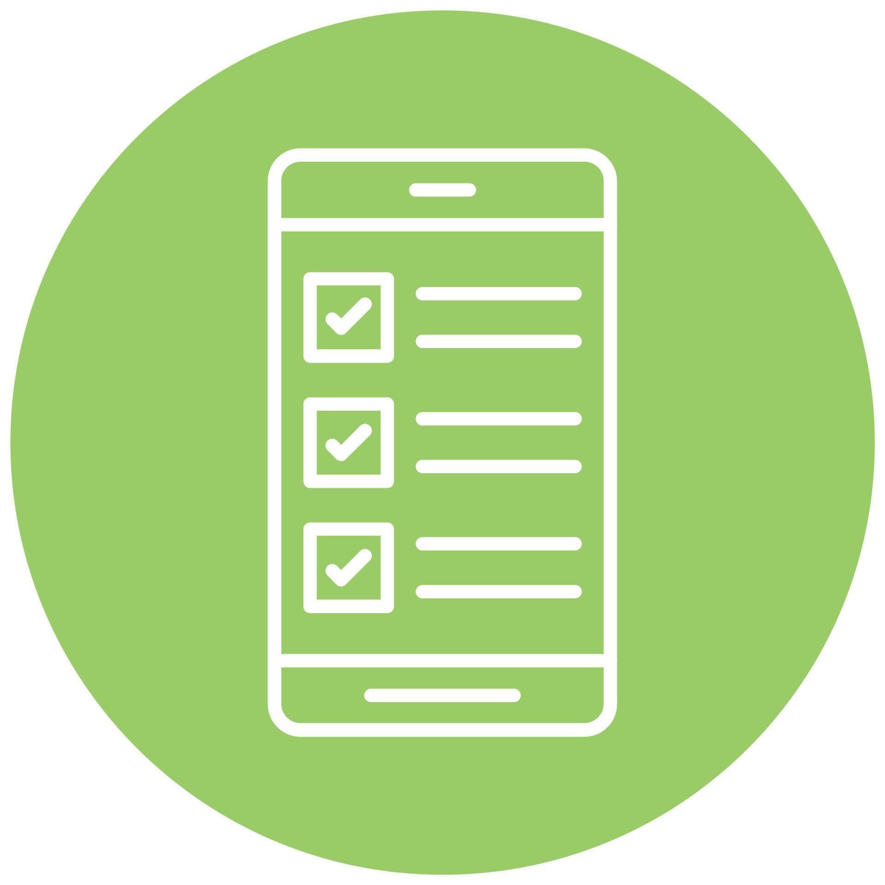

Student Survey System
Spring Boot • Vue.js • Docker • Kubernetes • AWS RDS
- Developed a Spring Boot microservices application with RESTful APIs to manage student survey data, implementing JPA/Hibernate for seamless interaction with an AWS RDS MySQL database.
- Containerized the application using Docker and deployed it on Kubernetes, ensuring scalability and efficient orchestration in a cloud-native environment.
- Built a CI/CD pipeline to automate building, testing, containerization, and deployment to Kubernetes clusters using GitHub Actions/GitLab CI.
- Validated API endpoints with Postman; optionally developed a Vue.js frontend to perform all CRUD operations as an extra credit extension.